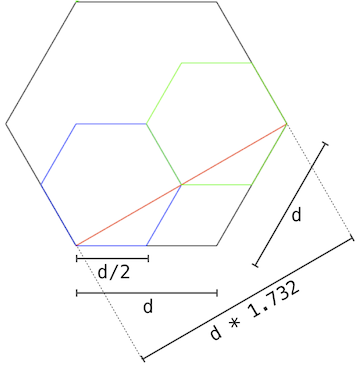

Eval calls apply,
which just calls eval again!
When does it all end?
Eval calls apply,
which just calls eval again!
When does it all end?
In this project, you will develop an interpreter for a subset of the Scheme language. As you proceed, think about the issues that arise in the design of a programming language; many quirks of languages are the byproduct of implementation decisions in interpreters and compilers.
You will also implement some small programs in Scheme. Scheme is a simple but powerful functional language. You should find that much of what you have learned about Python transfers cleanly to Scheme as well as to other programming languages. To learn more about Scheme, you can read the original Structure and Interpretation of Computer Programs online for free. Examples from chapters 1 and 2 are included as test cases for this project. Language features from Chapters 3, 4, and 5 are not part of this project, but of course you are welcome to extend your interpreter to implement more of the language. Since we only include a subset of the language, your interpreter will not match exactly the behavior of other interpreters such as STk.
The project concludes with an open-ended graphics contest that challenges you to produce recursive images in only a few lines of Scheme. As an example of what you might create, the picture above abstractly depicts all the ways of making change for $0.50 using U.S. currency. All flowers appear at the end of a branch with length 50. Small angles in a branch indicate an additional coin, while large angles indicate a new currency denomination. In the contest, you too will have the chance to unleash your inner recursive artist.
This project includes several files, but all of your changes will be
made to the first four: scheme.py, scheme_reader.py,
questions.scm, and tests.scm. You can
download all of the project code as a zip
archive.
scheme.py |
The Scheme evaluator |
scheme_reader.py |
The Scheme syntactic analyzer |
questions.scm |
A collection of test cases written in Scheme |
tests.scm |
A collection of test cases written in Scheme |
scheme_tokens.py |
A tokenizer for scheme |
scheme_primitives.py |
Primitive Scheme procedures |
scheme_test.py |
A testing framework for Scheme |
ucb.py |
Utility functions for 61A |
autograder.py |
Utility functions for grading. |
This is a two-part, two-person project. All questions are labeled sequentially, but some are designated for certain people by a prefix of their letter (A or B). Both partners should understand the solutions to all questions. Note: only Person A should submit the project.
In the first part, you will develop the interpreter in stages:
In the second part, you will implement Scheme procedures that are similar to some exercises that you previously completed in Python.
In the end, you and your partner will submit one project. Person-specific problems are graded individually and do not affect your partner's score. There are 27 possible correctness points and 3 composition points. The composition score in this project will evaluate the clarity of your code and your ability to write tests that verify the behavior of your interpreter. You can receive extra credit for various enhancements to your project.
Submit the project using submit proj4. The only files you are
required to submit are scheme.py, scheme_reader.py,
questions.scm, and tests.scm. If you add extensions, you may
need to modify and turn in some of the other files as well.
Most of the work in the Python part of this project will be in reading
and understanding the code. Don't allow the portions that don't say
"*** YOUR CODE HERE ***" to remain a mystery to you: you will have
to understand much of it. As usual, ask us and your fellow students
for help understanding anything. A large part of what you get from
this project will come from actually figuring out what's already
there!
In contrast, the amount of Python code you have to write is not large. Our solution, including the optional extra credit, added less than 150 lines. Don't let that mislead into thinking you'll be able to toss this off in an hour! Figuring out which lines to add will take a great deal more time.
Before you begin working on the project, review what you have learned in lecture about the Scheme language in Section 3.2 of Composing Programs.
Read-Eval-Print. The interpreter reads Scheme expressions, evaluates them, and prints the results.
scm> 2
2
scm> (((lambda (f) (lambda (x) (f f x)))
(lambda (f k) (if (zero? k) 1 (* k (f f (- k 1)))))) 5)
120The starter code for your Scheme interpreter in scheme.py can
successfully evaluate the first expression above, since it consists of
a single number. The second (a computation of 5 factorial) will not
work just yet.
Load. The load procedure reads a file of Scheme code, as if
typed into the terminal. For example, to load tests.scm, evaluate
either of the following call expression.
scm> (load 'tests)
;; or
scm> (load "tests")Symbols. Unlike some implementations of Scheme, in this project numbers and boolean values cannot be used as symbols. Also, symbols are always lower-cased.
scm> (define 2 3)
Traceback (most recent call last):
0 (#define 2 3)
Error: bad argument to define
scm> 'Hello
helloTurtle Graphics. In addition to standard Scheme procedures, we
include procedure calls to the Python turtle package. You can read
the turtle module documentation online.
Note: The turtle Python module may not be installed by default
on your personal computer. However, the turtle module is installed
on the instructional machines. So, if you wish to create turtle
graphics for this project (i.e. for the contest), then you'll either
need to setup turtle on your personal computer or use university
computers.
The tests.scm file contains a long list of sample Scheme
expressions and their expected values.
(+ 1 2)
; expect 3
(/ 1 0)
; expect ErrorYou can compare the output of your interpreter to the expected
output by running scheme_test.py.
python3 scheme_test.pyFor the example above, scheme_test.py will evaluate (+ 1 2) using
your code in scheme.py, then output a test failure if 3 is not
returned as the value. The second example tests for an error (but
not the specific error message).
Only a small subset of tests are designated to run by default because
tests.scm contains an (exit) call near the beginning, which
halts testing. As you complete more of the project, you should move
or remove this call. Your interpreter doesn't know how to exit until
you complete Problems 3 and 4; all tests will run until then.
Important: As you proceed in the project, add new tests to the top
of tests.scm to verify the behavior of your implementation. Your
composition score for this project will depend on whether or not you
have tested your implementation in ways that are different from the
autograder.
We've included an autograder which includes tests for each question. Just as in the Hog project, you will have to unlock some of the tests first before you can use them to test your project. To unlock tests for a particular question, run the following command from your terminal:
python3 autograder.py -u q1Once you have unlocked the tests, you can invoke autograder for a particular question as follows:
python3 autograder.py -q1To help with debugging, you can also start an interactive prompt if
an error occurs by adding the -i flag at the end:
python3 autograder.py -q1 -iYou can also invoke the autograder for all problems at once using:
python3 autograder.pyYou might have noticed a file called tests.pkl that came with the
project. This file is used to store autograder tests, so make sure
not to modify it. If you need to get a fresh copy, you can
download it here.
Debugging. Try using the trace decorator from the ucb module
to follow the path of execution in your interpreter.
Exceptions. As you develop your Scheme interpreter, you may find
that Python raises various uncaught exceptions when evaluating Scheme
expressions. As a result, your Scheme interpreter will halt. Some of
these may be the results of bugs in your program, and some may be
useful indications of errors in user programs. The former should be
fixed (of course!) and the latter should be handled, usually by
raising a SchemeError. All SchemeError exceptions are handled and
printed as error messages by the read_eval_print_loop function in
scheme.py. Ideally, there should never be unhandled Python
exceptions for any input to your interpreter.
To run your Scheme interpreter in an interactive mode, type:
python3 scheme.pyYou can use your Scheme interpreter to evaluate the expressions in an
input file by passing the file name as a command-line argument to
scheme.py:
python3 scheme.py tests.scmCurrently, your Scheme interpreter can handle a few simple expressions, such as:
scm> 1
1
scm> 42
42
scm> #t
#tIf your interpreter goes into an infinite loop, you should be able to
stop it with Ctrl-c (or Ctrl-c Ctrl-c in an Emacs shell buffer).
To exit the Scheme interpreter, issue Ctrl-d (Ctrl-c Ctrl-d in
Emacs) or (after finishing problems 3 and 4) evaluate the exit
procedure:
scm> (exit)The interpreter represents Scheme values using subtypes of the class
SchemeValue, which is defined in scheme_primitives.py. You will
find definitions of all the methods used in these values in
SchemeValue, where they are given default definitions. Many of the
these definitions simply cause an error, since many methods work only
on particular types. For example, the length method (for
determining the length of a list) is defined only on Pairs and
nil, so its default definition is to raise a SchemeError. That
definition, in turn, is inherited by default by all the other subtypes
of SchemeValue, but overridden in Pair and nil.
It is characteristic of this object-oriented approach that it avoids the use of if statements in most cases. Instead of writing something like
def apply(proc, args, env):
if type(proc) is PrimitiveProcedure:
# Code to apply primitive function
elif type(proc) is LambdaProcedure:
# Code to apply lambda function
elif ...
...
else:
raise SchemeError("attempt to call something other than a function")the programmer instead writes
def apply(self, args, env):
# Code to apply a primitive methodin the class PrimitiveProcedure and
def apply(self, args, env):
# Code to apply a lambda functionin the class LambdaProcedure, and so forth, with a default
definition in SchemeValue that contains the final raise
statement.
SchemeValue and its subclasses are defined in scheme_primitive.py
and scheme.py. Here are these types and examples of expressions you
can write in your Python code to produce them:
| Scheme Data Type | Our Internal Representation Classes | Python Code |
|---|---|---|
*Types defined in scheme_primitives.py* |
||
Numbers: 0, -3.2 |
SchemeInt and SchemeFloat.
|
scnum(0), scnum(3.2) |
Symbols: merge, define |
SchemeSymbol |
intern('merge'), intern('define') |
Strings: "foo" |
SchemeStr |
scstr('foo') |
Booleans: #t, #f |
scheme_true and scheme_false |
scheme_true, scheme_false |
Pairs: (a . b) |
Pair |
Pair(intern('a'), intern('b')) |
nil, () |
nil |
nil |
Lists: (a b) |
Pair and nil |
Pair(intern('a'), Pair(intern('b'), nil)) |
okay |
okay |
okay |
*Types defined in scheme.py* |
||
| Functions | PrimitiveProcedure, LambdaProcedure,
MuProcedure |
PrimitiveProcedure(...), LambdaProcedure(...),
MuProcedure(...) |
Notes
The intern function returns a symbol, given its name (as a Python
string or a Scheme symbol). It always returns the same symbol for
equal strings, so that all instances of the same symbol return true
when compared using the Python is operator (or the Scheme eq?
function).
The okay class represents the undefined value returned by, for
example, the Scheme function load. Its sole interesting property
is that it prints as "okay".
Classes whose names are uncapitailized (nil, scheme_true, etc.)
are immediately replaced by instances of those types. For example:
class nil(SchemeValue):
...
nil = nil()From this point on, nil is the sole object of (what was)
the class nil, which we no longer need to be able to name, since
we'll never create another instance of it.
As a convenience, the Pair constructor will also accept Python
numbers, converting them into SchemeInts and SchemeFloats, and
Python strings, converting them into SchemeSymbols with intern.
For the sake of not making the spec even longer, we have posted some additional reading that explains the existing code here.
The function scheme_read in scheme_reader.py parses a Buffer
(buffer.py) instance that returns valid Scheme tokens on invocations
of current and pop methods. This function returns the next full
Scheme expression in the src buffer, converted into some kind of
SchemeValue. Ths scheme_read function does not return values of
any of the procedure types, nor the special type okay.
Complete the scheme_read function in scheme_reader.py by adding
support for quotation. This function dispatches on the type of the
next token:
DELIMITERS), then it is self-evaluating. Return it. (provided)'bagel), then return a quote special form (such as (quote
bagel))."(", return the result
of read_tail. (provided)Unlock tests with the following command:
python3 autograder.py -u q1To test your code, use the following command:
python3 autograder.py -q q1Complete the read_tail function in scheme_reader.py by adding
support for dotted lists. A dotted list in Scheme is not necessarily a
well-formed list, but instead has an arbitrary second attribute that
may be any Scheme value.
The read_tail function expects to read the rest of a list or dotted
list, assuming the open parenthesis of that list has already been
popped by scheme_read.
Consider the case of calling scheme_read on input "(1 2 . 3)".
The read_tail function will be called on the suffix "1 2 . 3)",
which is
the pair consisting of the Scheme value 1 and the value of
the tail "2 . 3)", which is
2 and the
Scheme value 3.Thus, read_tail would return Pair(1, Pair(2, 3)).
Hint: In order to verify that only one element follows a dot, after
encountering a '.', read one additional expression and then check to
see that a closing parenthesis follows.
Unlock tests with the following command:
python3 autograder.py -u q2To test your code, use the following command:
python3 autograder.py -q q2You can also verify interactively that your solutions to Problem 1 and 2 work correctly by running
# python3 scheme_reader.py
read> 42
42
read> '(1 2 3)
(quote (1 2 3))
read> foo
foo
read> ()
()
read> '()
(quote ())
read> (1 (2 3) (4 (5)))
(1 (2 3) (4 (5)))
read> (1 (9 8) . 7)
(1 (9 8) . 7)
read> (hi there . (cs . (student)))
(hi there cs student)For each question, add a few tests to the top of tests.scm to
verify the behavior of your implementation.
There are a number of if statements in the code that test a
variable proper_tail_recursion. Until you get the first
extra-credit problem (#23), this variable is the constant False,
which you should bear in mind with reading the code.
In the implementation given to you, the scheme_eval function is
complete, but few of the functions or methods it uses are implemented.
In fact, the evaluator can only evaluate self-evaluating expressions:
numbers, booleans, and nil.
In this course, we've seen two approaches to data-directed
programming. In one, illustrated by scheme_eval, the data contain
some identifying tag that indicates what the various operations on
that data are supposed to do. In the case of scheme_eval, this tag
is a combination of the type of the expr argument and (when that
argument is non-atomic) the first item in the list. We use a few
if clauses to handle base cases (symbols, numbers, etc.). Then,
for pairs that start with a symbol, we first use a dispatch table (see
Lecture #17) to handle the special forms. The remaining cases are
calls, handled in the rest of scheme_eval.
The other approach is to have the data in effect contain the
implementations of the operations upon it. This can be done using
object-oriented programming, where methods (functions) for
manipulating and object are in effect attached to that object. The
class SchemeValue and its subtypes are an example.
Implement the apply method in the class PrimitiveProcedure.
Primitive procedures are applied by calling a corresponding Python
function that implements the procedure.
The apply method overrides the default definition in SchemeValue,
of which PrimitiveProcedure is a subtype. The default definition
simply raises an exception, since most Python types do not implement
function application. All definitions of apply that do return a value
are defined to return a tuple, (V, E), where V is a Scheme value or
expression, and E is an environment frame (type Frame) or None.
The apply method in PrimitiveProcedure always returns None as
the value of E, which indicates that "V is the final value
resulting from applying this function to its arguments." As you'll
see, overridings of apply for other classes of function have the
option to return an environment frame for E, which means "V is a
Scheme expression that has to be further evaluated in environment E
to get the actual result of applying this function to its arguments."
Scheme primitive procedures are represented as instances of the
PrimitiveProcedure class, defined in scheme.py. A
PrimitiveProcedure has two instance attributes:
fn is the Python function that implements the primitive Scheme
procedure.use_env is a boolean flag that indicates whether or not this
primitive procedure will expect the current environment to be
passed in as the last argument. The environment is required, for
instance, to implement the primitive eval procedure.To see a list of all Scheme primitive procedures used in the project,
look in the scheme_primitives.py file. Any function decorated with
@primitive will be added to the globally-defined _PRIMITIVES list
for later processing into a PrimitiveProcedure and assignment to the
global environment in scheme.py.
The apply method for a PrimitiveProcedure instance takes a Scheme
list of argument values and the current environment. It returns a
pair consisting of a Scheme value (the one returned by the fn
function when it is called) and None, since the value will already
be fully evaluated.
Your implementation should:
arg_list = list(args).)use_env instance variable is True, then add the current
environment env as the last argument.fn instance variable on those arguments (hint: use *
notation).TypeError exception being
thrown, then raise a SchemeError instead.To test your code, run the following command:
python3 autograder.py -q q3The tests for PrimitiveProcedure.apply should now pass. However,
your Scheme interpreter will still not be able to apply primitive
procedures, because your Scheme interpreter still doesn't know how to
look up the values for the primitive procedure symbols (such as +,
*, and car).
Implement the lookup method of the Frame class. It takes a symbol
(Python string) and returns the value bound to that name in the first
frame of the environment in which it is found. A Frame represents
an environment via two instance attributes:
bindings is a dictionary that maps Scheme symbol keys
(represented as Python strings) to Scheme values.parent is the parent Frame instance. The parent of the Global
Frame is None.Your lookup implementation should,
self.bindings if it exists.lookup that symbol in the parent if it exists.SchemeError. (provided)Unlock tests with the following command:
python3 autograder.py -u q4To test your code, run the following command:
python3 autograder.py -q q4After you complete this problem, you should be able to evaluate primitive procedure calls, giving you the functionality of the Calculator language and more.
scm> +
#[primitive]
scm> (+ 1 2)
3
scm> (* 3 4 (- 5 2) 1)
36
scm> (odd? 31)
#tThe do_<something>_form functions implement the "special forms" in
Scheme---expressions represented as lists that are not evaluated
according to the general rules for evaluating function calls. The
scheme_eval function uses a dispatch table, SPECIAL_FORMS, to
detect special forms and select the proper do_*_form function to
handle them. All these functions take the rest of the special form
(other than the first symbol) and an environment and return a Scheme
value and an environment. The environment is None if there is
nothing further to do to evaluate the form and the returned Scheme
value is the final result. A non-nil value for the environment
indicates that to get the actual final result of evaluating the form,
the interpreter must evaluate (in the sense of scheme_eval) the
returned expression in the returned environment.
For this problem, you're going to do something different. We've implemented a
bug into the Scheme interpreter so that our interpreter incorrectly works
starting with the first part of do_define_form. (The first part of
do_define_form binds names to values but does not create new procedures. It
also returns the name after performing the binding.) We're going to give you the
code for this first part and have you debug our program.
The code is here:
def do_define_form(vals, env):
...
if scheme_symbolp(target):
check_form(vals, 2, 2)
value = scheme_eval(vals[1], env)
env.define(target, value)
return target, None
...We check that the first item in vals is a name and then evaluate the
rest of vals to find the value for that variable. Then we bind the
value to the name and return the name and an environment of
None. This is because return values from special forms are
automatically scheme_eval'd again. By having the environment be
None, we signal that we don't actually want the value (in this case,
the name) to be evaluated again.
Theortically this should work. However, let's try the following input in our interpreter.
scm> (define tau (* 2 3.1415926))Instead of getting tau back, something else has happened. Run the
following command:
python3 autograder.py -q q5You'll notice that the tests fail and give you a stack trace of what went wrong.
We've set our unlocking questions to be a tutorial on how to find the bug. Go through the tutorial and fix the bug. The bug is a one line fix. You should not have to fix multiple lines of code. To run the tutorial:
python3 autograder.py -u q5Once you've fixed the bug, the tests should pass:
python3 autograder.py -q q5You should now be able to give names to values and evaluate symbols to those values.
scm> (define x 15)
x
scm> (define y (* 2 x))
y
scm> y
30
scm> (+ y (* y 2) 1)
91
scm> (define x 20)
x
scm> x
20Implement the do_quote_form function, which evaluates the quote
special form. Once you have done so, you can evaluate quoted
expressions.
scm> 'hello
hello
scm> '(1 . 2)
(1 . 2)
scm> '(1 (2 three . (4 . 5)))
(1 (2 three 4 . 5))
scm> (car '(a b))
a
scm> (eval (cons 'car '('(1 2))))
1Unlock tests with the following command:
python3 autograder.py -u q6You can test your code by running the following command:
python3 autograder.py -q q6At this point in the project, your Scheme interpreter should be be able to support the following features:
quote special form,(+ (- 4 2) 5)User-defined procedures are represented as instances of the
LambdaProcedure class, defined in scheme.py. A LambdaProcedure
instance has three instance attributes:
formals is a Scheme list of the formal parameters (symbols) that
name the arguments of the procedure.body is a single Scheme expression; the body of the procedure.env is the environment in which the procedure was defined.First, implement the begin special form, which includes a list of
one or more sub-expressions that are each evaluated in order. The
value of the final sub-expression is the value of the begin
expression.
scm> (begin (+ 2 3) (+ 5 6))
11
scm> (begin (display 3) (newline) (+ 2 3))
3
5
scm> (begin (print 3) '(+ 2 3))
3
(+ 2 3)Unlock tests with the following command:
python3 autograder.py -u qB7You can test your code by running the following command:
python3 autograder.py -q qB7Implement the do_lambda_form method, which evaluates lambda
expressions by returning LambdaProcedure instances. While you
cannot call a user-defined procedure yet, you can verify that you have
read the procedure correctly by evaluating a lambda expression.
scm> (lambda (x y) (+ x y))
(lambda (x y) (+ x y))In Scheme, it is legal to have function bodies with more than one
expression. In order to implement this feature, your do_lambda_form
should detect when the body of a lambda expression contains multiple
expressions. If so, then do_lambda_form should place those
expressions inside of a (begin ...) form, and use that begin
expression as the body:
scm> (lambda (y) (print y) (* y 2))
(lambda (y) (begin (print y) (* y 2)))You can test your code by running the following command:
python3 autograder.py -q qA8Currently, your Scheme interpreter is able to define user-defined procedures in the following manner:
scm> (define f (lambda (x) (* x 2)))
fHowever, we'd like to be able to use the shorthand form of defining procedures:
scm> (define (f x) (* x 2))
fModify the do_define_form function so that it correctly handles the
shorthand procedure definition form above. Make sure that it can
handle multi-expression bodies. Hint: construct a lambda
expression and evaluate it with do_lambda_form.
You can test your code by running the following command:
python3 autograder.py -q qA9Once you have completed this problem, you should find that defined procedures evaluate to lambda procedures.
scm> (define (square x) (* x x))
square
scm> square
(lambda (x) (* x x))Implement the make_call_frame method of the Frame class, which:
Frame instance, the parent of which is self.
(provided)SchemeError if make_call_frame receives a different
number of formal parameters and arguments.You can test your code by running the following command:
python3 autograder.py -q q10Implement the check_formals function to raise an error whenever the
Scheme list of formal parameters passed to it is invalid. Raise a
SchemeError if the list of formals is not a well-formed list of
symbols or if any symbol is repeated. (Hint: The symbol? procedure
in scheme_primitives.py returns whether a value is a Scheme symbol.)
You can test your code by running the following command:
python3 autograder.py -q qB11Implement the apply method in the LambdaProcedure class. It
should:
Frame, with all formal parameters bound to their
argument values.procedure in the environment represented by
this new frame.procedure.You can test your code by running the following command:
python3 autograder.py -q q12After you complete LambdaProcedure.apply, user-defined functions
(and lambda functions) should work in your Scheme interpreter. Now is
an excellent time to revisit the tests in tests.scm and ensure
that you pass the ones that involve definition (Sections 1.1.2 and 1.1.4).
You should also add additional tests of your own at the top
of tests.scm to verify that your interpreter is behaving as you
expect.
Logical special forms include if, and, or, and cond. These
expressions are special because not all of their sub-expressions may
be evaluated.
In Scheme, only #f (also known as false or False) is a false
value. All other values are true values. The __bool__ method causes
true and false SchemeValues to be true and false Python values as
well, so you can easily test whether a value is a true value or a
false value.
It makes sense for the do_*_form functions for the logical forms to
take advantage of their freedom to return an expression and
environment for further evaluation rather than a value, rather than a
value and None. For example, the expression (if (zero? x) (f x) (g
x)) means "if x is 0, evaluate (f x) in the current environment
and otherwise evaluate (g x) in the current enviornment. By
returning one or the other of these expressions and its environment
argument, do_if_form fulfills its contract. Doing it this way will
turn out to be useful when you get to Problem 24.
Implement do_if_form so that if expressions are evaluated
correctly. This function should return either the second (consequent)
or third (alternative) expression of the if expression, depending on
the value of the first (predicate) expression.
scm> (if (= 4 2) true false)
#f
scm> (if (= 4 4) (* 1 2) (+ 3 4))
2It is legal to pass in just two expressions to the if special form.
In this case, you should return the second expression if the first
expression evaluates to a true value. Otherwise, return the special
okay value, which represents an undefined value.
scm> (if (= 4 2) true)
okayUnlock tests with the following command:
python3 autograder.py -u qA13You can test your code by running the following command:
python3 autograder.py -q qA13Implement do_and_form and do_or_form so that and and or
expressions are evaluated correctly.
The logical forms and and or are short-circuiting. For and,
your interpreter should evaluate each sub-expression from left to
right, and if any of these evaluates to False, then False is
returned. If all but the last sub-expressions evaluate to true
values, return the last sub-expression from do_and_form.
For or, evaluate each sub-expression from left to right. If any
evaluates to a true value, then return it. Otherwise, return the last
sub-expression from do_or_form.
scm> (and)
#t
scm> (or)
#f
scm> (and 4 5 6)
6 ; all operands are true values
scm> (or 5 2 1)
5 ; 5 is a true value
scm> (and #t #f 42 (/ 1 0))
#f ; short-circuiting behavior of and
scm> (or 4 #t (/ 1 0))
4 ; short-circuiting behavior of orYou can test your code by running the following command:
python3 autograder.py -q qB14Implement do_cond_form so that it returns the first result
sub-expression corresponding to a true predicate (or else). Your
implementation should match the following examples and the additional
tests in tests.scm.
scm> (cond ((= 4 3) 'nope)
((= 4 4) 'hi)
(else 'wait))
hi
scm> (cond ((= 4 3) 'wat)
((= 4 4))
(else 'hm))
#t
scm> (cond ((= 4 4) 'here 42)
(else 'wat 0))
42For the last example, where the body of a cond case has multiple
expressions, you might find it helpful to replace cond-bodies with
multiple expression bodies into a single begin expression, i.e., the
following two expressions are equivalent.
(cond ((= 4 4) 'here 42))
(cond ((= 4 4) (begin 'here 42)))If the body of a cond case is empty, then do_cond_form should
quote the value of the predicate and return it, if the predicate
evaluates to a true value.
scm> (cond (12))
12
scm> (cond ((= 4 3))
('hi))
hiThe value of a cond is undefined if there are no true predicates and
no else. In such a case, do_cond_form should return okay.
You can test your code by running the following command:
python3 autograder.py -q qA15The let special form introduces local variables, giving them their
initial values. For example,
scm> (define x 'hi)
x
scm> (define y 'bye)
y
scm> (let ((x 42)
(y (* 5 10)))
(list x y))
(42 50)
scm> (list x y)
(hi bye)The let special form is the syntatic sugar of creating and then calling a lambda procedure. That is, the following two expressions are equivalent:
(let ((x 42) (y 16)) (+ x y))
((lambda (x y) (+ x y)) 42 16)Thus, a let form creates a new Frame (containing the
let bindings) which extends the current environment and
evaluates the body of the let with respect to this new
Frame. This is what a lambda does when called.
Hint:In your project code for do_let_form, you'll want
to return the equivalent lambda expression of the
original let expression. How would you represent this?
Remember to add test cases to the top of tests.scm and make
sure your let correctly handles multi-expression bodies:
scm> (let ((x 42)) x 1 2)
2You can test your code by running the following command:
python3 autograder.py -q qA16Implement the mu special form, a non-standard Scheme expression
type. A mu expression is similar to a lambda expression, but
evaluates to a MuProcedure instance that is dynamically scoped.
To do this, complete MuProcedure.apply to call MuProcedure
procedures using dynamic scoping. Calling a LambdaProcedure uses
lexical scoping: the parent of the new call frame is the environment
in which the procedure was defined. Calling a MuProcedure created by
a mu expression uses dynamic scoping: the parent of the new call
frame is the environment in which the call expression was evaluated.
As a result, a MuProcedure does not need to store an environment as
an instance attribute. It can refer to names in the environment from
which it was called.
scm> (define f (mu (x) (+ x y)))
f
scm> (define g (lambda (x y) (f (+ x x))))
g
scm> (g 3 7)
13You can test your code by running the following command:
python3 autograder.py -q qB17Your Scheme interpreter implementation is now complete. You should
have been adding tests to the top of tests.scm as you did each problem. These tests
will be evaluated as part of your composition score for the project.
Let's make streams native to our Scheme interpreter. We'll implement streams as another Scheme object that inherits from SchemeValue.
Out of the variables and functions associated with Streams, your interpreter has the following implemented:
the-empty-stream
stream-null?
stream-carIn order for the user to create streams, our interpreter will have to accept the
cons-stream function.
scm> (cons-stream 1 the-empty-stream)
(1 . #[promise (not forced)])Implement the do_cons_stream_form. In order to create our internal
representation of Streams, you'll have to call the class constructor Stream
with a first and a rest.
Remember that do_cons_stream_form is another logical special form. Of which of
the operands for cons-stream, do we want to be evaluated and of which, do we
not want to be evaluated?
You can test your code by running the following command:
python3 autograder.py -q q18Let's have our interpreter accept the stream-cdr function. Our interpreter
treats stream-cdr as a PrimitiveProcedure with the function
scheme_stream_cdr. scheme_stream_cdr calls the stream_cdr method of a
Scheme Object operand.
Implement the stream_cdr method in the class Streams. We also want to
optimize for memoization. Once stream-cdr is called on a stream, Scheme
calculates the next item in the stream and preserves that calculation so that in
the next call of stream-cdr on that stream, Scheme can return the preserved
calculation instead of re-calculating it.
scm> (define s (cons-stream 1 (cons-stream x the-empty-stream)))
s
scm> (stream-car s)
1
scm> (define x 2)
x
scm> (stream-cdr s)
(2 . #[promised (not forced)])
scm> s
(1 . #[promised (forced)])
scm> (define x 3)
x
scm> (stream-cdr s)
(2 . #[promised (not forced)])Notice how the 2nd item in the stream remained 2.
In order to implement stream_cdr method, we'll have the
instance attribute _compute_rest be a flag.
_compute_rest will initially contain the rest of the
stream. Once we call stream_cdr, we'll create a rest
attribute for that stream, which contains the evaluation of
the rest of the stream. Finally, we'll set
_compute_rest to be a value that indicates that the rest
of the stream has been calculated.
You can test your code by running the following command:
python3 autograder.py -q q19Congrats! Your interpreter contains the basic functionality for streams.
Not only is your Scheme interpreter itself a
tree-recursive program, but it is flexible enough to
evaluate other recursive programs.
Implement the following procedures in Scheme in
questions.scm. Feel free to use any of the utility
functions defined in the beginning of questions.scm in your
code.
The various utilities functions given are
mapfilterstream-mapstream-filterdisplay-streaminterleavemember?accumulateMake sure to understand how they work because some of them will be useful in implementing the following problem.
Implement the merge procedure, which takes in a comparator and two
sorted list arguments and combines them into one sorted list. A
comparator is a function that compares two values. For example:
scm> (merge < '(1 4 6) '(2 5 8))
(1 2 4 5 6 8)
scm> (merge > '(6 4 1) '(8 5 2))
(8 6 5 4 2 1)You can test your code by running the following command:
python3 autograder.py -q q20In weaving, a horizontal thread is pulled through a bunch of vertical threads. The horizontal thread passes over some of the vertical ones, and under others. The choice of over or under determines the pattern of the weave.
We will represent a pattern as a list of the words over and under, repeated as needed. Here's an example of a valid pattern:
scm> '(over over under over under under)
(over over under over under under)The pattern may be of any length (it depends on the desired width of the woven cloth), but it must contain at least one over and at least one under.
Write the Scheme code for lambda patterns, which when called, returns an (infinite) stream that contains all possible patterns. The order in which the patterns should go in depends on length. All patterns of length 2 should go before all patterns of length 3. All patterns of length 3 should go before all patterns of length 4, etc. However, the order in which the patterns of length N go within themselves does not matter. For example, both implementations below are valid:
Implementation #1
scm> (define s (patterns))
scm> (stream-car s)
(over under)
scm> (stream-car (stream-cdr s)
(under over)
scm> (stream-car (stream-cdr (stream-cdr s)))
(over under under)
scm> (stream-car (stream-cdr (stream-cdr (stream-cdr s))))
(under over under)Implementation #2
scm> (define s (patterns))
scm> (stream-car s)
(under over)
scm> (stream-car (stream-cdr s)
(over under)
scm> (stream-car (stream-cdr (stream-cdr s)))
(over over under)
scm> (stream-car (stream-cdr (stream-cdr (stream-cdr s))))
(under over over)You may find the utility functions defined in the beginning of questions.scm to be useful.
You can test your code by running the following command:
python3 autograder.py -q q21You have been given the definition to an abstract implementation of
trees. Use it to implement tree-sums, which is a function that
returns a list of all possible sums of nodes, when traversing from
root to leaf. For example, the following tree when passed through
tree-sums will return (20 19 13 16 11):
Hint: You might find it helpful to use append. append is already built in
to your interpreter. Try it out.
You can test your code by running the following command:
python3 autograder.py -q q22Implement the hax procedure that draws the following recursive
illustration when passed two arguments, a side length d and
recursive depth k. The example below is drawn from (hax 200 4).

To see how this illustration is constructed, consider this annotated version that gives the relative lengths of lines of the component shapes in the figure.

So far, we have paid no attention to handling tail recursion
correctly. For example, to evaluate this call on the tail-recursive
sum-series function:
(define (sum-series f low high init)
(if (> low high) init (sum-series f (+ low 1) high (+ init (f low))))
(sum-series (lambda x: (* x x)) 0 1000000)Your implementation will end up recursively calling scheme_eval to
evaluate the recursive call to sum-series, with the result that the
Python interpreter would have to recurse about 1000000 levels deep to
perform the computation (which it generally will refuse to do). For
this problem, we'll make the Scheme interpreter properly tail
recursive so that it will allow an unbounded number of active tail
calls in constant space.
We have arranged that proper_tail_recursion is initially false, with
the result that only the false branches of several if statements
will get executed. Complete the other branches of these statements
(and possibly make other modifications, depending on what you've done
in implementing the special forms) to handle tail calls properly.
Instead of recursively calling scheme_eval for tail calls and
logical special forms, and let, replace the current expr and env
with different expressions and environments and take advantage of the
while loop in scheme_eval to use iteration in the interpreter in
place of recursive calls in these cases. For call expressions, this
change only applies to calling user-defined procedures.
Once you finish, uncomment the line proper_tail_recursion = True in
scheme.py.
You can test your code by running the following command:
python3 autograder.py -q q24The year 1960 saw the publication of the Revised Report on the Algorithmic Language Algol 60 as well as an implementation of that language. The Report was a model of clear and concise language description that served as a model for many later language reference manuals (including that of Scheme). In at least one instance, however, it is possible that the desire for a simple and elegant description led to a language feature that proved a bit problematic to implement, however much fun it was to use.
Specifically, to describe parameter passing to functions, the Report used a form of the substitution model (see Lecture #2). That is, they described calls to functions as if the effect were to replace the call (at execution time) with a copy of the function's body with the actual parameters substituted for all occurrences of the formal parameters, first changing the names of local variables so as to avoid clashes with names used in the actual parameters. It's a simple explanation, but there is a subtle, very significant difference from our substitution model: it is the actual parameter expressions, not their values, that are substituted. The result is known as call-by-name parameter passing (whereas Python and standard Scheme use call-by-value parameter passing).
Consider a call in Scheme such as (f (/ x y) y). In standard
Scheme, this requires that the interpreter evaluate f, (/ x y),
and y and then call f with the argument values bound to f's
formal parameters. If y should happen to be 0, the argument
evaluation will fail and f will never be called. Suppose, however,
that we change the semantics of Scheme so that we evaluate (/ x y)
only if and when the body of f actually uses its value? If f is
something like this:
(define (f a b)
(if (= b 0) 0 a))then f's first parameter would never be evaluated during the call
(f (/ x y) y) and the function would return 0.
Back in the 1960s, getting this to work turned out to be "interesting", especially if one was trying to get fast executable code. However, if speed is not of the essence, the implementation is fairly easy: we just convert call-by-name parameters into ordinary call-by-value parameters by means of a trick. For the definition above, we can write instead:
(define (f a b)
(if (= (b) 0) 0 (a)))and then change the sample call to
(f (lambda () (/ x y)) (lambda () y))This approach is an illustration on the old CS saying 'Any difficulty in computer science can be overcome by adding a level of indirection.' Here, we pass in a parameterless function that yields the parameter's value only when it is called. Such functions, when implicitly introduced by a compiler, interpreter, or runtime system, are known as thunks (for obscure reasons). The usual scoping rules for Scheme automatically avoid name clashes, so no renaming of parameters is needed.
Implementing the feature exactly this way is trickier than it looks
(trust us), so we suggest an alternative. First, we'll introduce a
new special form with the same syntax as lambda: (nu (*formals*)
*body*), which produces call-by-name functions represented in our
interpreter by NuProcedures. Although we could represent thunks
with LambdaProcedures, we instead suggest subtyping
LambdaProcedure and modifying your code so that whenever
scheme_eval fetches a thunk from a symbol, the value actually
obtained is the result of calling the thunk. You'll also have to fill
in NuProcedure so that when such functions are called, they
"thunkify" all their parameters rather than simply evaluating them.
You can test your code by running the following command:
python3 autograder.py -q q25Congratulations! You have finished the final project for 61A! Assuming your tests are good and you've passed them all, consider yourself a proper computer scientist!
Now, get some sleep. You've earned it!
We've added a number of primitive drawing procedures that are
collectively called "turtle graphics". The turtle represents the
state of the drawing module, which has a position, an orientation, a
pen state (up or down), and a pen color. The tscheme_*x* functions
in scheme_primitives.py are the implementations of these procedures,
and show their parameters with a brief description of each. The
Python documentation of the turtle module contains more
detail.
Contest. Create a visualization of an iterative or recursive
process of your choosing, using turtle graphics. Your implementation
must be written entirely in Scheme using the interpreter you have
built. However, you may add primitive procedures to interface with
Python's turtle or math modules. Other than that all computation
must be done in Scheme. If you do add new primitives, then make sure
to submit scheme_primitives.py in addition to contest.scm.
Prizes will be awarded for the winning entry in each of the following categories, as well as 3 extra credit points.
Entries (code and results) will be posted online, and winners will be selected by popular vote as part of a future homework. The voting instructions will read:
Please vote for your favorite entry in this semester's 61A Recursion Exposition contest. The winner should exemplify the principles of elegance, beauty, and abstraction that are prized in the Berkeley computer science curriculum. As an academic community, we should strive to recognize and reward merit and achievement (translation: please don't just vote for your friends).
To improve your chance of success, you are welcome to include a title and descriptive haiku in the comments of your entry, which will be included in the voting.
Entries that do not construct an image iteratively or recursively may be disqualified. This includes just drawing a preexisting image, even if the drawing function is iterative or recursive.
Submission instructions will be posted on the course website.
We have implemented a significant subset of Scheme in this project, but our interpreter can be extended with more features by following the extension instructions